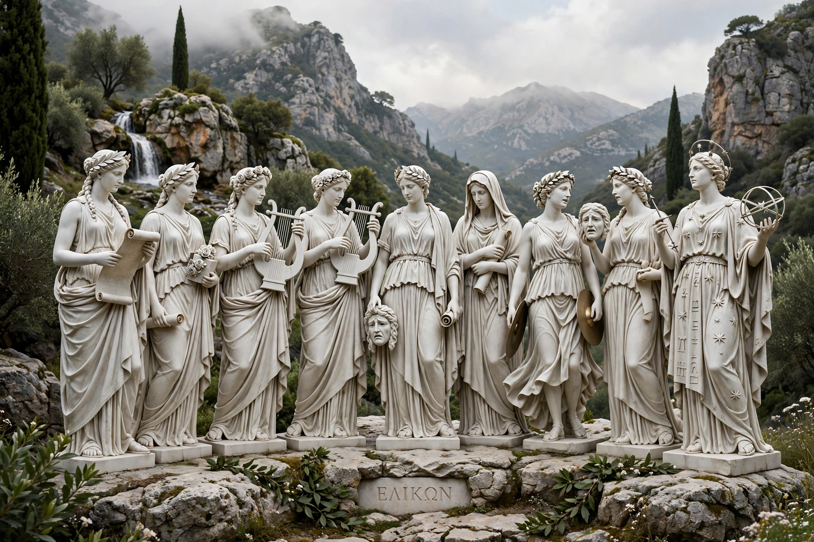

In ancient Greek religion and mythology, the Muses (Ancient Greek: Μοῦσαι, Moûsai) are the inspirational goddesses of literature, science, and the arts. They were considered the source of the knowledge embodied in the poetry, lyric songs, and myths that were transmitted orally for centuries in ancient Greek culture. In the later classical tradition, each Muse came to preside over a particular art or science.

The daughters of Zeus and Mnemosyne (Memory), born over nine nights, the canonical nine are: Calliope (epic poetry), Clio (history), Erato (lyric and love poetry), Euterpe (music and flutes), Melpomene (tragedy), Polyhymnia (sacred song), Terpsichore (dance), Thalia (comedy), and Urania (astronomy). Hesiod's Theogony begins with the Muses of Mount Helicon, who breathed a divine voice into the poet. Their seats were Helicon in Boeotia and Mount Parnassus; they attended Apollo, their leader (Apollo Musagetes).
Epic and lyric poets conventionally opened with an invocation to the Muse — Homer begins the Odyssey "Sing to me of the man of twists and turns" through her, and the Iliad with "Rage — Goddess, sing the rage." Sanctuaries (mouseia) at Helicon and elsewhere gave the word "museum": a place dedicated to the Muses and to learning; the great Mouseion of Alexandria, attached to its Library, is the ancestor of the modern institution.
The word "muse" survives in "music," "museum" and "amuse." Writers and artists have invoked personal muses ever since; Dante addressed the Muses in the Divine Comedy, and the figure of the inspiring muse remains a common trope, later critiqued in feminist readings of art history.
Apollo · Hesiod · Mnemosyne · Greek mythology